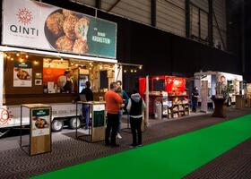

Resto-Expo 2022: we're going for it!
Two years ago we had to cancel our Resto-Expo fair. We still assume we won't experience this a third time. That is why we are working behind the scenes on an unforgettable and safe edition of Resto-Expo. Mark your calendar now. On Monday 28, Tuesday 29 and Wednesday 30 March we would finally like towelcome you again at our fair in Flanders Expo Ghent. We will of course keep an eye on all developments. But we will continue to work with enthusiasm on an unforgettable fair with even more experience, even more offers, even more innovations. You can read the details here in the next issue of this magazine. But book your 'date with Resto-Frit' now on March 28, 29 or 30 .
Anniversary edition of Resto-Expo lives up to expectations
“With 5,000 visitors and 128 exhibitors, we can be satisfied with Resto-Expo 2019,” says CEO Vincent Messiaen. “We receive very positive comments from visitors and exhibitors.
The choice to provide more variety appears to work.” For the third year in a row, Resto-Expo was once again proud to present a 'food truck lane', where about 15 food trucks from all over the world were gathered to pamper visitors. “The number of food trucks continues to grow steadily,” says Vincent.
“A nice evolution. I have the impression that everyone finds this very normal the third time around, while you rarely see this in these volumes.
By widening the corridor with the food trucks, we tried to create a kind of 'square feeling'. As a result, all food trucks came into their own better.”
Even more important in the positive evaluation was the strong growth in exhibitors. “Our fair has literally grown,” it sounds. “Due to the strong growth, we had to plan an extra corridor. It goes without saying that we were not sad about that. It also gave the feeling that there was more space for every visitor. Very positive, because some people thought there were fewer visitors.” The rapidly growing variety in the group of exhibitors was particularly spectacular this year. For example, visitors saw a number of stands with digital ordering and collection systems that can greatly increase efficiency in a snack shop. But also companies that provide digital tools to deal more smoothly with the administrative side of the increasingly complex mix of student workers, flexi-jobbers and permanent employees. The number of exhibitors with healthy, veggie and alcohol-free offerings also grew significantly this year.
“By letting everyone enter through our wide culinary patio, we also showed much better what we have to offer,” concludes Vincent Messiaen. “The visitors were immediately immersed in innovations and walked straight to the demo kitchen. It did much better in terms of attention this year. So we can only conclude that we are on the right track in terms of innovation. This in combination with the traditional pampering of our customers, of course. It is still good to see how our customers can enjoy a day or an evening out themselves.”
RESTO EXPO 2019
The trusted success formula is not being tampered with. That means: doing business cheaply, learning, discovering, enjoying and celebrating. “The interest among exhibitors remains high,” says organizer Koen Vercauteren. “Together we will focus even more on experience and discovery this year.” Last year, for the first time, experiments were conducted with a large central kitchen where demonstrations were given throughout the day of the exhibition. “As with any innovation, it took some getting used to,” says Koen. “But the reactions were positive. The demos are interesting and relevant for customers in the snack segment as well as for other catering customers. More and more snack shops are offering a wider range and the catering industry is always looking for innovation and ways to keep food costs under control.”
ADDED VALUE
“We want to offer even more in that central kitchen this year,” Koen continues. “We are also looking at collaboration between different exhibitors to create fun concepts or dishes with each other's products. We call this 'Food pairing' in hip terms. In this way, we really want to offer inspiration and added value to visitors who want to do more than visit their classic row of exhibitors.”
GOOD FEELING
To be clear, there is nothing wrong with the latter. “Of course not,” Koen emphasizes. “Resto-Expo must be an event that every visitor has a good feeling about. For some customers, visiting their trusted suppliers is more important to talk bisexually or to discover new products. Still other visitors particularly value the evening program. We are not going to disappoint those people either.”
REALM
There will be no shortage of atmosphere at and around Resto-Expo. “The food lane with the many food trucks received a lot of positive comments last year,” says Koen. “This year we are doing even better. This, together with our culinary patio with the demo kitchen, provides a completely different experience. This experience will also be useful on the central square. With a happy hour, this time not with gin and tonic but a new product. And I don't even need to repeat that we partied well in the evening.”
TO REGISTER
The invitation to Resto-Expo will normally arrive in your mailbox at the end of February and beginning of March. Register online to avoid long queues upon arrival. 25th edition of Resto-Expo: not to be missed!
.jpg)
Resto-Expo 2018: An edition to frame!
Resto-Expo 2018 was an edition you will never forget. With more visitors, more exhibitors and more atmosphere, 2018 was a top year. Which you can see for yourself in the many photos here! It will not be easy to do even better for the 25th edition in 2019. Fortunately, the organizers like a challenge.
“Of course we want to do everything we can for an anniversary edition,” says organizer Koen Vercauteren. “Although we have not made it easy for ourselves with this edition. For this I must first and foremost thank our customers and exhibitors. We had 15% more visitors and again reached a record with 132 exhibitors.”
It is striking that for this edition the increase in the number of visitors was nicely spread over the three days. “There is a trend that many people come a little later in the afternoon and then suddenly continue to party until the late hours,” says Koen. “We also received very good comments about our 'food lane'. About ten exhibitors provided a unique image with beautiful food trucks and many opportunities to taste specialties.”
Everything can be better. This also applies to the organization of a trade fair. “Of course we want to outdo ourselves every year,” Koen promises. “We will therefore first listen to suggestions from customers and exhibitors in the coming months. I already see a big challenge in our culinary patio. This year it was wider and larger with a large space for show cooking. We must work on ensuring that our customers know more about this and fully enjoy it in 2019. But actually our fair is not the biggest challenge of the year. The biggest challenge for all wholesalers remains to put Resto-Frit/Resto-Culinair even more, better and stronger on the map of the entire catering landscape.”
Resto-Expo 2018: Your annual appointment in March at Flanders Expo!
“Our fair is a year younger than our group,” says Koen Vercauteren, one of the organizers of the annual top event. “We are therefore looking forward to our 24th edition. But that does not prevent us from striving for an unforgettable event. Like every year, we continue to build on the strong tradition with new elements and improvements.” The innovation starts with registrations. “The invitations will be sent to our customers at the end of February, beginning of March,” Koen explains. “We will now register everyone individually. This is how we recognize our customers and their guests. At the same time, we will provide a slightly more festive welcome and decoration at the reception. The atmosphere must be right immediately at this festive edition.”
BROAD HORIZON
“There is a lot to see at Resto-Expo 2018,” the organization also knows. “But too often we see that customers simply go by their familiar products and don't see the rest. We want to encourage our people to take a broader view. In times where consumers expect more and more from us, it is important that we broaden our horizons. That is why we are developing a system this year that rewards customers who visit many exhibitors.”
HAPPY 2 HOURS
By popular request, there will again be a 'Happy 2 hours' area in the event space this year. There everyone can enjoy a festive gin and tonic for two hours. Outside of that, the organization provides an even more festive decoration. “We also want to make an extra effort to furnish the large catering area,” Koen promises. “That is not easy, given that we receive so many guests, but we are certainly making an investment to make it as pleasant as possible.”
SECRET
The organization does not yet allow us to look much deeper into the heart. “As always, we don't want to reveal in advance who will be performing,” it sounds mysterious. “But take our word for it. It will be another big surprise and a blast.” It will also remain quiet about the innovations at the fair itself until March. “We would like to talk to some exhibitors,” Koen explains. “We hope for some surprising new names, but those negotiations are still in the final stages. In any case, we will encourage exhibitors to provide as much experience and interaction as possible.”
GIFTS
A promotion is nice, but quickly disappears from the accounting system. A gift - earned by collecting points - remains tangible and is ultimately a nice way to say thank you to all our customers.” In short, you should not miss it on March 26, 27 or 28, 2018 in Ghent. In the coming weeks, the organization will continue to work hard on a unique combination of learning, tasting, discovering, enjoying, meeting, relaxing and partying.
Make sure you are there!
Thanks for a TOP three-day event
Resto-Expo has also had a successful year in 2017, mainly thanks to your appreciated presence. We hope that you will have a pleasant memory of your visit.
Like every year, we tried to bring some innovation. A different structure, different exhibitors, attractive decoration... Naturally, we did not tinker with the success formula with the surprise performances. Like every year, we saw how our partying customers could forget all business worries for a moment and enjoy a wonderful party.
We would like to thank all employees of the fair. They ensured that everything went particularly smoothly this year. Class!
Thanks also to all exhibitors. Almost all loyal exhibitors were back at work. But we also saw many new companies that found their way to Resto-Expo. A wonderful evolution that we hope to continue in the coming years. The real reason for our three-day event lies in the new products and concepts that you can discover and taste. In addition, there is of course the pampering element that we will happily continue to cherish for you - our valued customers. Thank you for your cooperation. Thank you for your presence!
Resto-Expo: March 27, 28 and 29 in Flanders Expo Ghent
Resto-Expo is almost the annual highlight in the operation of Resto-Frit/Resto-Culinair. “We see our fair first and foremost as a moment to really pamper our customers,” says co-organizer Koen Vercauteren. “Those who work in the catering industry rarely have time to party or sit down and relax. At Resto-Expo we try to ensure that every visitor can enjoy a tasty and well-organized meal, the necessary drinks and an attractive performance.”
But Resto-Expo wants to be much more than a big party. “We bring together a very varied selection of exhibitors,” says Koen. “They can introduce their products to our customers. They can taste and discover new things there. And that in a relaxed way, outside the hectic circumstances that usually exist at home base.”
The success formula of recent years will not change much this year. “Never change a winning team,” the organizers laugh. “The main change is that for practical reasons we are moving back to hall 8 at Flanders Expo. We also try to make the chosen path even better. The system with digital scoring is perfect, which makes everything run much more smoothly, with less chance of errors. We also do everything we can to avoid queues at the entrance.”
This year, the organizers are again looking for a good balance in the offering for visitors from the snack world and professionals from the brasseries and restaurants. “This year we are increasing the number of demonstrations where you can see chefs at work,” Koen concludes. “We hope that we can offer such demo stands at four locations at the fair. The intention is to show that very creative things can often be made with very simple basic products.” The culinary patio, where there is room for all kinds of delicacies, is also being further expanded.